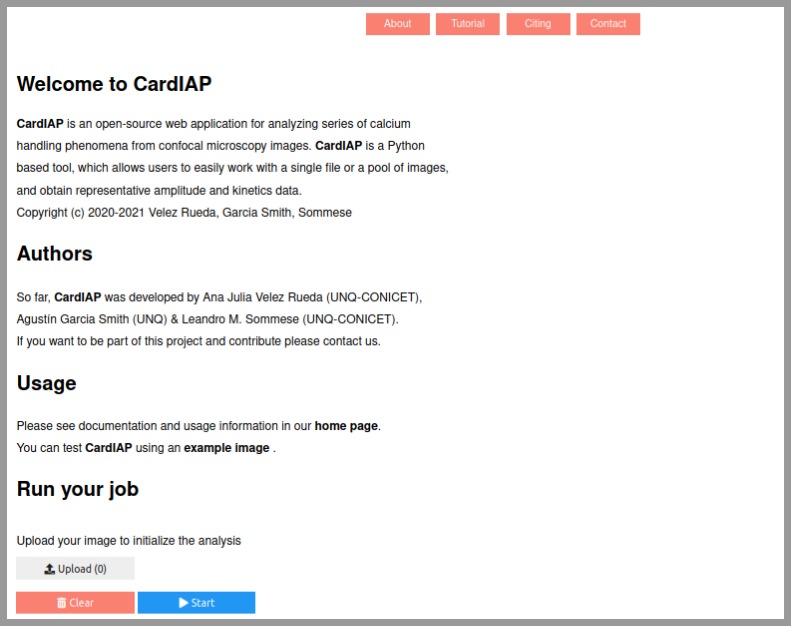
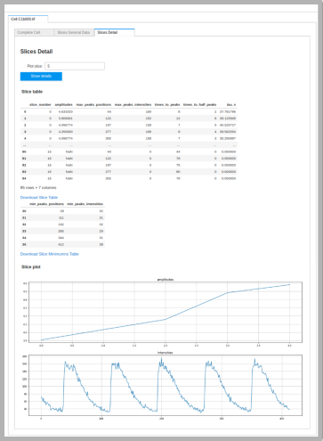
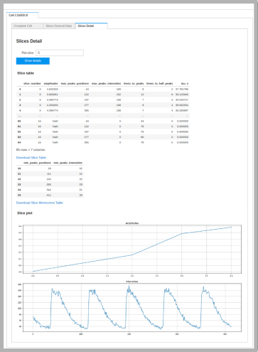
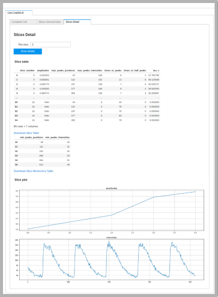

CardIAP image analysis is based on cardilib, a python library created by the authors for or performing biomedical images analysis.
This package based on NumPy, OpenCV, and Pandas libraries is available for installation and usage in all operative systems through
pip.
You can run CardIAP Online
This project is hosted in Binder. Launch CardIAPhere:
Quick start using CardIAP
STEP I: Upload your image(s) to analyze using the upload button. You can use the example images provided by CardiAP to make the first try.
Start button displays image(s). Users can delete the image(s) using Clear button.

STEP II: select the region of the picture for the analysis.
CardIAP allows the user to crop each image interactivelly, by using the image display and width and heigth selector.
After cropping the image and saving the crop sizes the setting inputs for the smoothing and analysis are requested.
STEP III: Voilà!! Now you can check out your results and download the tables

The results for each picture you uploaded will be provided in a different tab. Also, you will be able to check out the information about all the slices.
CardIAP also provides the amplitudes and intensities plots.
Video tutorial
CardIAP usage: Once the application is deployed, we must load an image from the upload button, we select the image and when we click on the play button it appears on the screen.
Using the scroll bars we can select a rectangle that will represent our area of interest. Make sure that area takes only a region within the cell that contains at least one Ca2+ transient. Once established, the selection can be saved through the save crop sizes button. This will display a configuration menu for filter and analysis parameters.
The filter setting is loaded with zero, so no filter will be applied to the ROI. The values depend on the noise in our images but we usually use a value of 5 for the kernel size and a sigma of 75.
Regarding the analysis setting, we can set the width of the slices (Slices width), which we recommend to be greater than one to reduce possible noise. The distance between peaks (Peaks dist.) can be known through the frequency or measured using the scroll bars. Calibration allows the users to modify the data corresponding to time.
Once the parameterization is finished, we proceed to analyze by clicking on the Analyze button.
Once the results are displayed, they can be downloaded. In the first tab the complete ROI data is shown, in the second the data of all the slices can be downloaded and in the third tab we can view and download the desired slices.
Dealing with analysis error
When CardIAP displays an analysis error message it is usually related to the ROI selection, usually when one of the slices does not contain the Ca2+ transient. This can be fixed by making sure the selection is inside the cell and includes Ca2+ transients. Another possible reason for this type of error is that the image is too noisy. In this case, the user can apply filters or determine the proper spacing between peaks. CardIAP allows the user to correct the parameters without having to reload the image.

 
